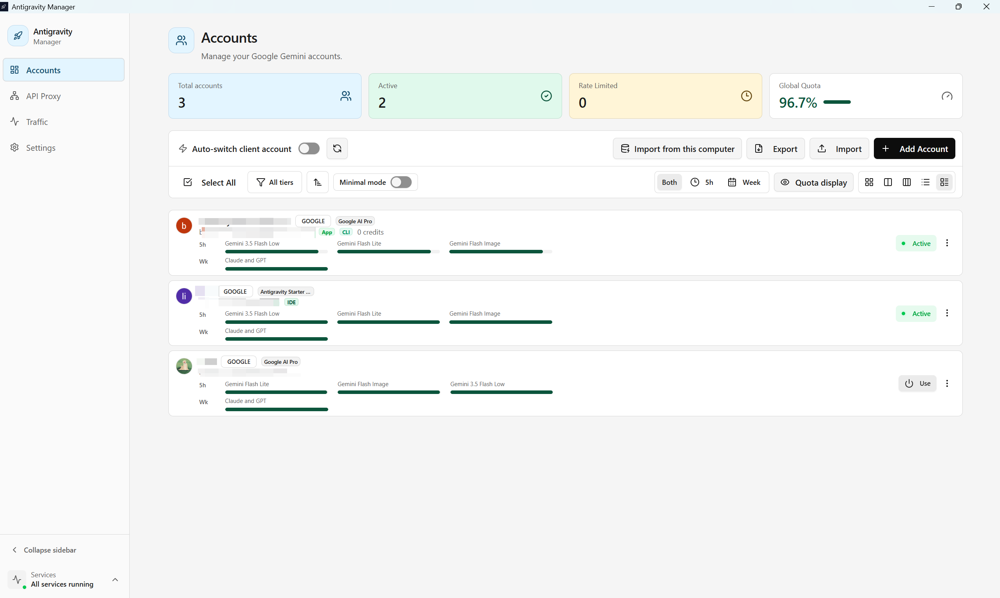

بدّل حسابات Antigravity على ويندوز.
Antigravity Manager Pro بيعرض لك الحسابات النشطة والحصة المتبقية لكل موديل، عشان تختار الحساب المناسب قبل التبديل.
مُثبّت ويندوز x64 على GitHub · واجهة بالعربي المصري والإنجليزي

إزاي تبدّل حساب Antigravity IDE؟
اختار الحساب اللي عايز تستخدمه في IDE أو Classic. احفظ شغلك الأول، لأن التبديل ممكن يعيد تشغيل البرنامج.
- نزّل مُثبّت ويندوز x64 من أحدث إصدار على GitHub وافتح البرنامج.
- من صفحة الحسابات، أضف حساب Google عن طريق المتصفح أو راجع الحسابات المتاحة للاستيراد من جهازك.
- اختار الحساب واضغط استخدم، وحدد Antigravity IDE أو Classic. اتأكد من الحساب في Antigravity بعد التبديل.
قارن الحصة
راجع حصة الخمس ساعات والحصة الأسبوعية للموديلات اللي الخدمة بتعرضها، قبل ما تختار الحساب.
افصل مساحات المشاريع
اربط حساب بمساحة عمل معزولة عشان كل مشروع يفتح بملف عميل منفصل.
وصّل أدوات البرمجة
استخدم بوابة API المحلية الاختيارية مع الأدوات المدعومة زي Codex وClaude Code وOpenCode.
ساعد ناس أكتر تلاقي البرنامج.
لو البرنامج ساعدك، ادّيله نجمة على GitHub. ومن Watch تقدر تتابع الإصدارات الجديدة.